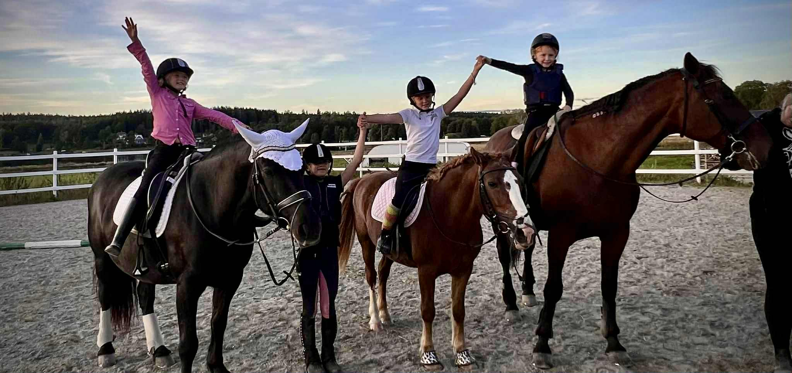

Stallinfo
Här hittar ni all samlad information som rör inackorderade på Hålbacka stall.
Stallregler:
- Sopa stallgången och plattan.
- Rengör alltid spolspiltan efter användning.
- Släng dina sopor i soptunnorna på plattan.
- Rengör alltid paddocken efter du använt den.
- Stäng alltid grinden till paddocken.
- Hästarna vill ha lugn och ro, inget springande eller skrikande.
- Rengör sjukhagen efter användning.
- Om hästen bajsar på gångbanan, vänligen hoppa av och sparka bort.
Riktlinjer vid in/utsläpp:
- Bla
- bla
- bla
Riktlinjer vid vattenveckor:
- Vattentillgång i hagarna nedanför paddocken: Koppla vattenslangen antingen till Thereses hus eller spolspiltan, beroende på vilken hage du fyller och vart vattentunnorna står.
- Vattentillgång i hagarna längre bort: För de hagar som ligger längre från stallet kan Therese & Uffe hjälpa till
att köra vatten med fyrhjulingen. Det är dock fortfarande vattenansvariges uppgift att:
- Kontrollera vattennivåerna regelbundet.
- Säkerställa att vattnet är fräscht och rent.
- Ha en dialog med Therese & Uffe i god tid angående att fylla vatten då dom hjälper till i mån av tid.
- Skötsel av tunnor och badkar: Sommartid är det ofta lättare att hålla badkar och tunnor halvfulla eftersom vattnet då dricks upp vilket minskar risken för att det hinner bli smutsigt. Detta gör det också enklare att diska ur dom ordentligt 1-3 gånger i veckan.
- Rent vatten: Hästarna måste ha tillgång till rent vatten hela tiden, särskilt under sommaren när dom dricker mer
och gärna slabbar ner vattnet med gräs och smuts från gräsiga munnar.
- Tänk alltid: "Skulle jag själv vilja dricka det här vattnet?"
- Använd gärna en sil för att fiska upp gräs och smuts som hamnar i tunnorna.
- Vintertid: På vintern använder vi uppvärmda vattentunnor för att det inte ska frysa vid minusgrader. Viktigt att tänka på att dom då har en mindre vattenmängd och man kan behöva fylla på varje dag. Uppvärma tunnor bör inte stå och värma tomma.
Kontaktlista
| Namn | Telefon | |
|---|---|---|
| Therese | 0700 - 00 00 00 | mail@exempel.com |
| Viktoria | 0700 - 00 00 00 | mail@exempel.com |
| Josefin | 0707 - 80 73 15 | josefin.vingeskog@hotmail.com |
| Victoria | 0700 - 00 00 00 | mail@exempel.com |
| Linn | 0700 - 00 00 00 | mail@exempel.com |
| Othilia | 0700 - 00 00 00 | mail@exempel.com |
| Angelica | 0700 - 00 00 00 | mail@exempel.com |
Kalender (Morgon & Kväll)
Grön prick: Utsläpp / Röd prick: Insläpp
Vattenveckor
- Othilia: v34, v40, v46, v52
- Therese: v35, v41, v47
- Vicky: v36, v42, v48
- Vickan: v37, v43, v49
- Josefin: v38, v44, v50
- Angelica: v39, v45, v51